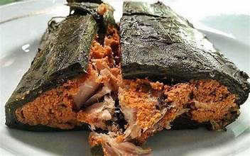
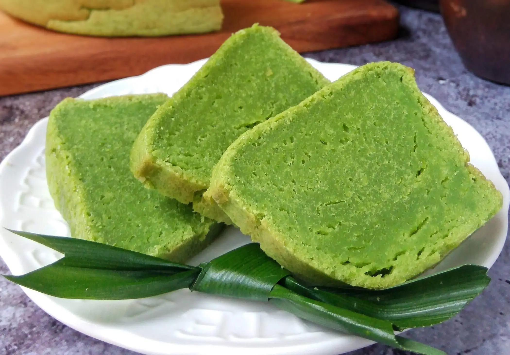
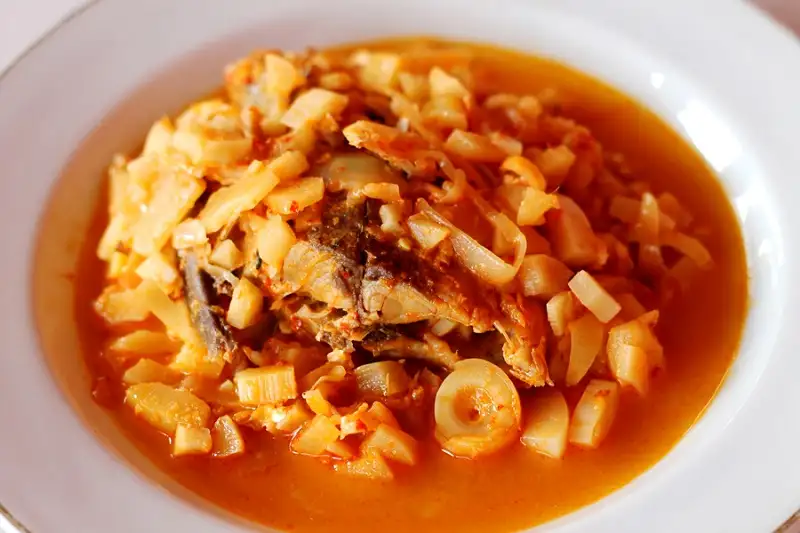
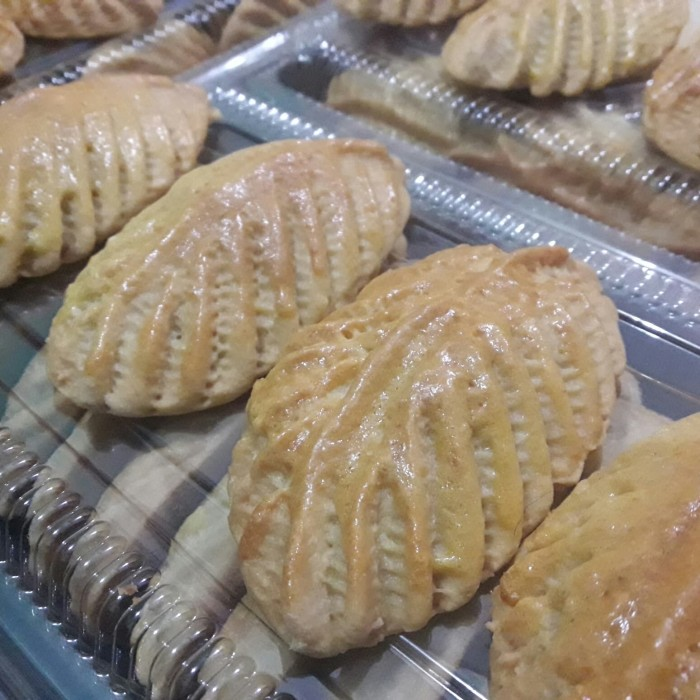

Pendap
Pendap adalah makanan khas Bengkulu yang terkenal. Makanan ini terbuat dari ikan yang dibumbui dengan campuran rempah-rempah seperti bawang putih, kunyit, dan cabai, kemudian dibungkus dengan daun talas dan dikukus hingga matang. Rasanya yang gurih dan sedikit pedas membuatnya menjadi favorit di berbagai acara adat.
Bolu Koja
Bolu Koja adalah kue tradisional Bengkulu yang memiliki tekstur lembut dan rasa manis legit. Kue ini terbuat dari campuran tepung terigu, telur, santan, dan daun pandan, sehingga menghasilkan aroma yang harum dan khas.
Lema
Lema adalah makanan fermentasi yang terbuat dari rebung (tunas bambu muda) dan ikan yang dicampur dengan bumbu tradisional. Makanan ini biasanya disantap sebagai pelengkap nasi dan dikenal memiliki rasa yang unik serta kaya akan probiotik.
Kue Tat
Kue Tat adalah kue tradisional Bengkulu yang berbentuk seperti pie dengan isian selai nanas. Kue ini biasanya dihidangkan saat perayaan atau hari besar seperti Lebaran dan memiliki rasa manis yang lembut.
Bay Tat

Bay Tat adalah sejenis kue tradisional yang dibuat dari tepung ketan, kelapa parut, dan gula aren. Rasanya manis dan teksturnya kenyal, menjadikannya camilan yang digemari banyak orang.
Masih banyak lagi makanan khas yang ada di Provinsi Bengkulu, untuk lebih jelas kunjungi website berikut>jelajahi